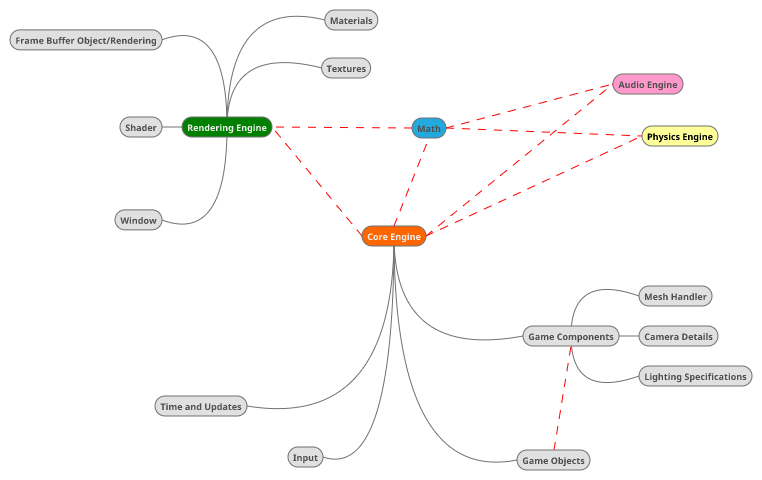

April 2017 - Engine Architecture
Game engine architecture! An area most people who are not into engine programming might look above and beyond. A game engine is the core foundation and software framework design for creative development. It's the heart of the games we play and thus an extremely critical part of making a successfull game. Questions like how do we optimally structure our engine? What parts should be considered first when we go through the code to screen pipeline? How do we handle user-input, in-game updates and scene rendering? How do all the different parts coomunicate and coordinate? [Game Engine Architecture, Jason Gregory]
My project has ultimately become a demonstration of one generic based way of creating a game engine. We will begin the discussion by starting off with the big basics. The entire engine is essentially divided up into three sections listed below. At the end of this post I have also attached a picture of my Eclipse library set up and how the classes are divided amongst each section.
- Rendering Engine
- Physics Engine
- Audio Engine
- Core Engine
Now of course, the physics and audio engine isn't implemented yet but the other two are and they are key to development.

Core Engine
Lets start by going through the Core Engine. This part essentially links modular engines together and produces the basis for rendering and updating the scene at an appropriate framerate. It consists of methods such as run(), createWindow(), exit() - all initiation and closing function that run the simulation we see on the screen. It also stores the different engines we have (such as the Rendering Engine and Physics Engine) and grants access to these if needed.
We also have the math section closely related to this, and every other engine. As I explained in an earlier post - I decided to design my own math library as I felt this way I could learn the mathematics behind everything I am doing. The Math library contains full support for Vector2f, Vector3f, Matrix4f and Quaternions. I actaully attempted designing a more generic library using templates in C++ for my C++ version of this engine and this was rather successful. It supports more versions of Vector and Matrix but nevertheless - this is what we have for Java!
For each loop the core engine goes through, it processes the input of our game, updates the values we see on the screen and only then renders it. Doing it this way is on purpose as this order provides a nice and fluid gameplay experience. In the simulation I have currently set up the chosen framerate is 60. This can be adjusted to the user's needs though and the framerate is not a limiting factor in terms of screen updates. The two are mutually exclusive on purpose. There are examples of games such as Need For Speed Rivals back in 2014 where they locked the game to 30fps. With specific hacks, the community was able to unlock the framerate of the game but subsequently the game's update speed also unlocked. So at 60fps the game was running at literally 2x the speed on the intended framerate. [Source]
Rendering Engine
The rendering engine is the meat on the bone in this engine. It takes care of all the communication with the GPU. The shader class itself was rather difficult to get correct. This class contains most of the OpenGL commands and directives. To create and transfer data from the CPU or Memory to the GPU is more difficult than it seems. The way it is set up right now allows for good regex parsing Fragment, Geometric and Vertex shader files with dynamic mapping. Most of this code structure came from The Benny Box and Offline OpenGL book. The most difficult part of this however was getting the first program to compile. Once you have something that's compiling and drawing properly it's all forward from there.
Then we have the Texture, Material, Vertex and Mesh classes. All of these classes take care of the creation of mesh based objects and their appropriate attributes. These classes along with the shaders are monitored through a resource management system that allows for multiple textures in the GPU pipeline and for the core engine to keep track of things.
Game
Then we have what sits ontop of the core engine - the simulation or 'game'. In this section we create all the objects we see on the screen. This part provides the relevant facts as to how the engines interact with each other and what happens in the scene. There's an individual class where we can spawn in objects and position them using our flexible transform class. This section could actually be done using a scripting engine but I have not implemented any way to support this. Nevertheless, the flexibility of creating objects here makes the entire engine very easy for 'new' users to use as they don't have dwelve into the code in order to spawn specific things.
We use a basic scene graph solution to display all our data and things we want to display on the screen. All objects are rendered in a tree hierarchy. This is essentially the core object creation within our engine. We have a rootobject that acts as the root of the scene. This root object gets branch and leaf child nodes consisting of more Game Objects. A Game Object consists of a Game Component - a structure that can be a thing like a Mesh, a Light or even a camera. A Game Object can also have more than one component in it's list which allows for scenes to render using relative positions. If a game object for example is spawned at (1,1,1) and it has another game object attached to it signaling to spawn at (0,0,0), it too will spawn at (1,1,1) as this is relative to the parent node. This can actually be seen in some of the screenshots I have posted earlier. This inheritence is very useful when creating larger projects and if you want to move an entire section of the game without having to go through each object individually.
When the core engine gets the input, updates and renders the scene it can easily go through each object from the root object and call their indvidual respective functions. This is another very big benefit of the way this system is set up.
Here is a link to the source code. 99% of it should be commented so please enjoy browsing at your own pleasure! To run import and link the latest versions of LWJGL and Slick Util libraries.